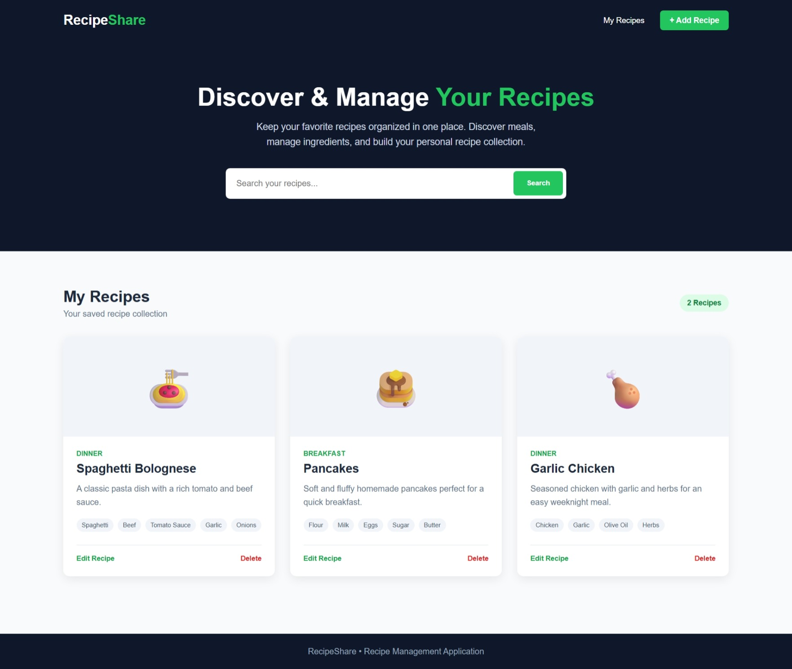
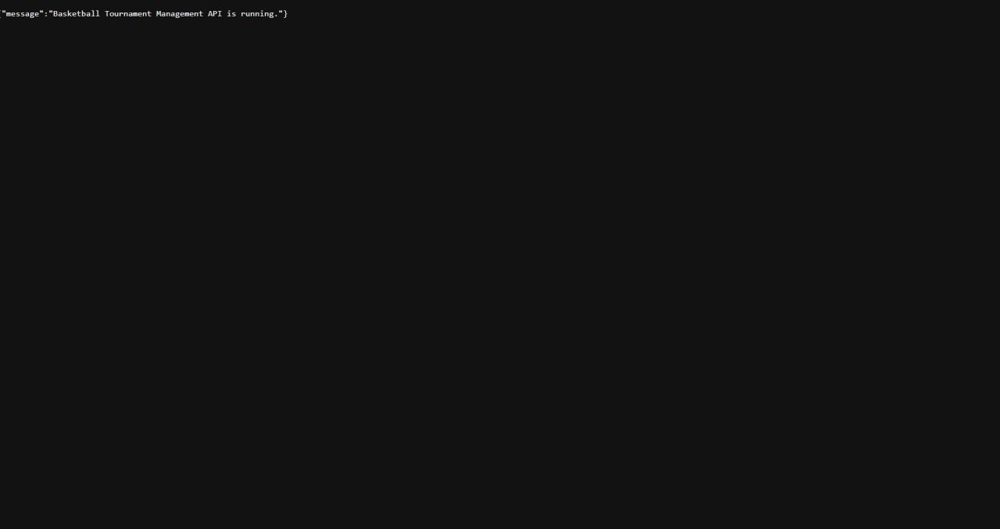
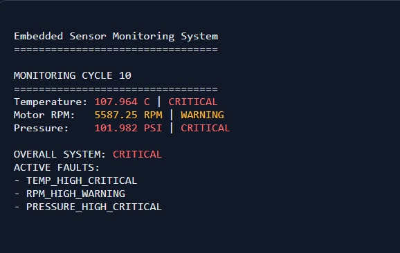

Computer Science Graduate
I build practical software solutions using backend, cloud, database, and systems technologies. I enjoy developing applications from initial design through deployment while continuously expanding my technical skills.
I'm Daniel Lubamba, a recent Computer Science graduate from Belmont Abbey College with interests in software engineering, backend development, cloud computing, platform engineering, and data technologies.
I enjoy turning ideas into practical software solutions and understanding how applications operate from development through deployment.
Through my projects, I have gained hands-on experience building REST APIs, designing relational databases, implementing authentication and authorization, containerizing applications with Docker, deploying applications to cloud environments, and developing C++ systems applications.
I am currently looking for opportunities where I can continue developing my engineering skills while contributing to meaningful software and technology projects.

Built and deployed a full-stack recipe-sharing application that allows users to organize, discover, and manage recipes.
Developed the backend using Node.js and Express, containerized the application with Docker, and implemented cloud deployment using Google Cloud Run and Cloud Build.
Node.js • Express.js • Docker • Google Cloud Run • Cloud Build
View on GitHub
Developed a RESTful backend system for managing basketball teams, players, games, statistics, and tournament information.
Implemented CRUD operations, relational database models, JWT authentication, protected routes, and role-based authorization.
Node.js • Express.js • Sequelize • SQLite • JWT • Postman
View on GitHub
Developed a C++ monitoring application that simulates real-time temperature, motor RPM, and pressure sensor readings.
Implemented warning and critical thresholds, system health evaluation, and automated fault detection using object-oriented programming and structured fault management.
C++ • OOP • Sensor Monitoring • Fault Detection • Systems Programming
View on GitHubPython
Java
JavaScript
SQL
C++
Node.js
Express.js
REST APIs
JWT Authentication
API Validation
SQLite
Sequelize ORM
SQL
Relational Database Design
AWS
Google Cloud Platform
Docker
Docker Compose
Terraform
Google Cloud Run
Google Cloud Build
CI/CD
Git
GitHub
PowerShell
Linux
Postman
VS Code
Jest
Object-Oriented Programming
Data Structures
Software Development Lifecycle
Authentication & Authorization
API Security
Debugging
I'm currently exploring opportunities in software engineering, backend development, cloud computing, platform engineering, and data engineering. Feel free to reach out if you'd like to connect or discuss an opportunity.